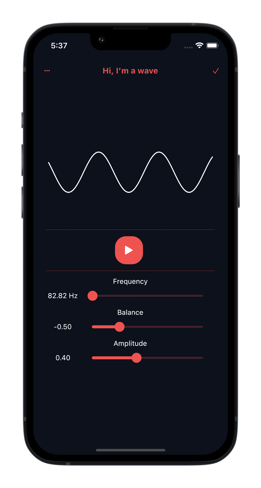
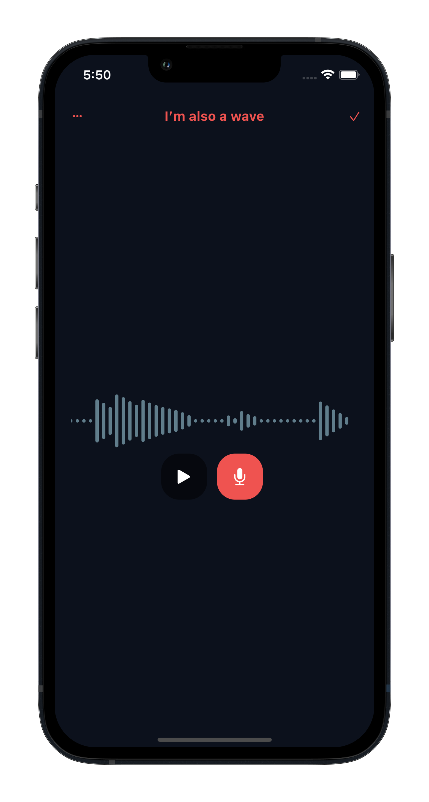
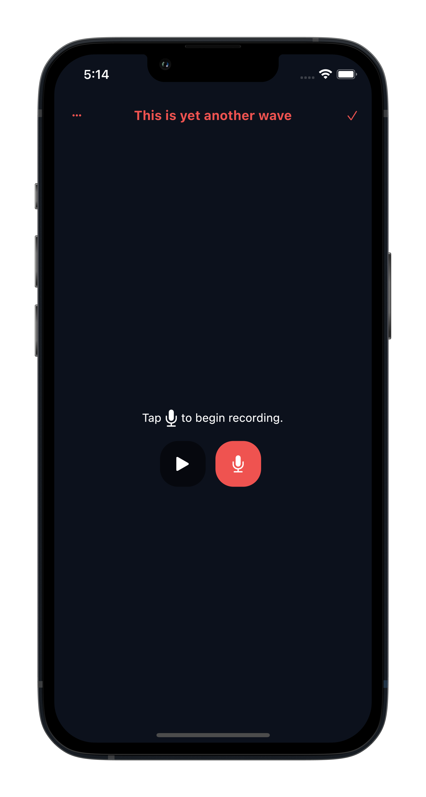
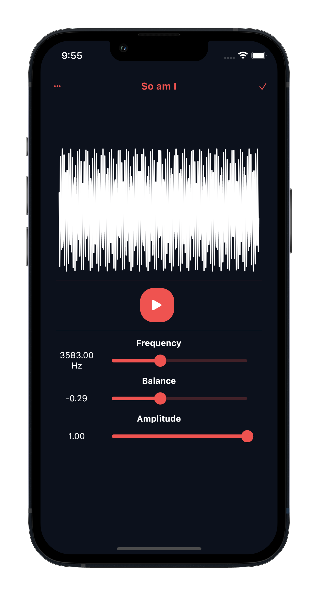

This is Wave.


Wave was created as an entry to the Science Talent Search Victoria 2022. It serves to provide a simple method of visualising sound by representing it in its physical form as a wave. The app includes two main features:
Sound wave recorder

The sound wave recorder uses the device's microphone to show recorded sound as waves. This also includes audio playback.
Sine wave builder

The sine wave builder allows users to generate sound waves by providing the frequency, balance and amplitude.